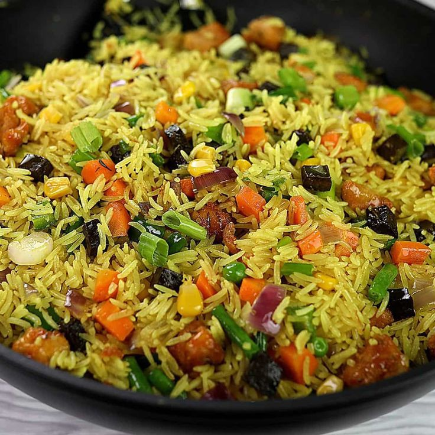

Fried Rice

Description
Fried rice is a staple dish in many African and Asian cuisines. It is made by stir-frying cooked rice with a variety of ingredients, such as vegetables, meat or seafood, and spices. The dish is often served as a main course or as a side dish, and it is a great way to use up leftover rice and ingredients.
Fried rice is a versatile dish that can be served at any time of day. It's a popular breakfast dish in some African countries, where it's often served with a fried egg or sausage. Fried rice is also a great option for a quick and easy lunch or dinner, and it's often served at outdoor gatherings and barbecues.
Ingredients
- 2 cups cooked rice (preferably day-old rice)
- 1 tablespoon vegetable oil
- 1 small onion, diced
- 2 cloves garlic, minced
- 1 cup mixed vegetables (e.g., peas, carrots, corn)
- 1 cup cooked chicken, beef, or shrimp
- 2 eggs, beaten
- 1 teaspoon soy sauce
- 1 teaspoon oyster sauce (optional)
- Salt and pepper to taste
Steps
- Prepare the ingredients: Chop the onion, garlic, and mixed vegetables. Cook the chicken, beef, or shrimp according to your preference.
- Heat oil in a wok*Heat 1-2 tablespoons of vegetable oil in a large wok or frying pan over medium-high heat.
- Scramble the eggsPour the beaten eggs into the wok and scramble them until they're cooked through. Remove the eggs from the wok and set them aside.
- Saut the onion and garlicAdd more oil to the wok if necessary, then saut¨¦ the chopped onion and garlic until they're translucent.
- Add mixed vegetablesAdd the mixed vegetables to the wok and stir-fry for 2-3 minutes.
- Add cooked riceAdd the cooked rice to the wok, breaking up any clumps with a spatula. Stir-fry the rice with the vegetables for about 5 minutes.
- Add cooked meat and eggsAdd the cooked meat and scrambled eggs to the wok, and stir-fry everything together for another minute.
- Season with soy sauce and serveSeason the fried rice with soy sauce, salt, and pepper to taste. Serve hot
Home